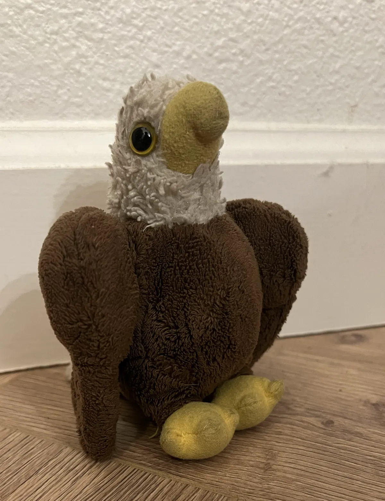

King Aquila reigns over Saxumania with justice and fairness. He was born into the royal family on September 11, 2001, a day which all Saxumanians celebrate. It is said that when King Aquila was born a triple rainbow appeared over the boulder, while the boulder itself began to float one inch off the ground.
During King Aquila's reign, Saxumania has tripled its population, and joined trade agreements with Mexico and New Zealand. It also expanded its borders to include two smaller boulders.
